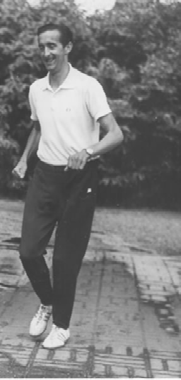

Как правило, бегуны и их тренеры считают, что причина неудач в достижении поставленных целей кроется в невезении, недостатке таланта, либо в каком то психологическом пробеле в подготовке атлета. Чаще всего, ни одна из этих причин не имеет места в действительности. Атлеты не достигают целей оттого, что не тренируются адекватно для их достижения. Большинство атлетов использует такие средства тренировки, либо ведёт такой образ жизни, при котором достижение поставленных целей становится невозможным. Другая важная причина – неудачная конструкция большинства моделей беговой обуви. Современные производители спортивной обуви взяли на себя роль Бога. Они считают, что Он ошибся, создавая человеческую ногу, и хотят исправить этот недостаток! Позже мы обсудим этот вопрос более подробно.
Одна из основных проблем, связанных с подготовкой спортсменов в Соединенных Штатах (и почти во всем мире) связана с тем, что люди любят измерять и учитывать всё, что они делают. Задача серьёзной спортивной подготовки заключается в улучшении соревновательных показателей, но если послушать многих спортсменов и их тренеров, то создается впечатление, что цель состоит в том, чтобы сделать побольше впечатляющих записей в дневнике тренировок! Очень многие атлеты думают, что смысл тренировки – в самой тренировке. Если у них в дневнике не хватает нужного количества недель с объёмом бега более 100 миль, либо не сделано запланированного количества повторений 400-метровых отрезков, то они чувствуют себя совершенно обескуражено и начинают сомневаться в способности показывать какие-либо результаты.
Помните, цель тренировки – это результат, показываемый на соревнованиях. Расстаньтесь с мыслью, что впечатляющие тренировочные объёмы непременно приведут к успешному выступлению. Прогресс не измеряется записями в дневнике тренировок или количеством миль, пробегаемых еженедельно. Прогресс определяется тем, что происходит во время соревнований.
Тренировка должна ежедневно подстраиваться под нужды спортсмена. Не существует формулы, по которой данный атлет должен выполнять ту или иную тренировочную работу. Спортсмен и тренер должны учиться подстраивать задачи тренировочного процесса к множеству факторов повседневной жизни. Например, если тренер запланировал тренировку 20х200 по 30 секунд, но перед этим у спортсмена был тяжёлый день на работе или в школе, тренер должен снизить объём нагрузок. Спортсмен может сделать 20х200 с более низкой скоростью (например, по 33 секунды) либо пробежать 10х200 по 30 секунд, но неуклонное следование намеченной программе может отбросить подготовку спортсмена на неделю назад. Иногда нужно делать лёгкие дни.
Бегуны, как правило, демонстрируют редко встречающуюся в других видах спорта одержимость выполнением тренировочной работы и в результате, часто тренируются во вред, вместо того, чтобы устроить разгрузочный день (день активного отдыха, не обязательно сидеть без движения). Как правило, спортсмены считают, что чем напряжённей тренировка, тем более быстрым будет бег. Это не всегда так. Нет ничего плохого в напряжённой тренировке – даже доходящей до пределов возможностей организма, но нужно не забывать и о лёгких днях и временном снижении нагрузок. Отдых важен так же, как и тяжелая тренировка. Большие нагрузки на фоне недостаточного восстановления приводит к разочарованию, отчаянию, возможным болезням и травмам.
Тренировочная программа важна, но она должна быть бесконечно гибкой! Слишком усердное следование программе тренировок может полностью разрушить подготовку. В мае 1981 года я наблюдал за тренировкой Греты Вайц на стадионе Бислет в Осло. Это было на второй или третий день после тяжёлых соревнований. Её ноги были ещё закрепощены после стресса соревнований, и 300 метровые повторения давались нелегко. После этой тренировки я написал записку Арне Хауквику, промоутеру из Осло, с предостережением, что если Вайц будет продолжать следовать такой тренировочной программе, то она неизбежно будет травмирована. Так и произошло – через несколько недель Грета получила серьёзную травму стопы, которая заставила её прекратить подготовку к установлению нового мирового рекорда на дистанции 5 000 метров. Остаток спортивного сезона для неё был потерян.
Другая распространённая ошибка – это неоправданный отказ от хорошо зарекомендовавших себя тренировочных методов, производимый из-за временного снижения соревновательных показателей. Например, на момент установления мирового рекорда в марафоне в 1982 году, Альберто Салазар был одним из лучших бегунов в мире на дистанции 5 000 и 10 000 метров. Вскоре после достижения этого результата он решил изменить тренировочную программу и начать специализироваться для выступлений в беге по шоссе, а не на стадионе. Прямым следствием этого стало снижение результатов на всех дистанциях (и на марафоне в том числе). Салазар потратил многие годы, чтобы стать выдающимся бегуном на дорожке стадиона, и скорость, которую он выработал, позволила ему стать непобедимым и на марафоне. Всего лишь незначительное изменение тренировочной программы с акцентом на марафонскую подготовку привело к потере его скоростного преимущества. Результатом стали разочарование и отчаяние. Из великого марафонца, доминировавшего на всех соревнованиях, Альберто превратился просто в очень хорошего бегуна. В 1985 году он бегал медленнее, чем Мери Деккер! Если бы он продолжал придерживаться тренировочного режима, который он выполнял до своего выдающегося сезона 1982 года, то было бы очень трудно победить его на Олимпийском марафоне в 1984 году. В том забеге победил Карлуш Лопеш, который всего за шесть недель до марафона показал второй в истории результат на дистанции 10 000 метров. Двое бегунов, финишировавших с небольшим отрывом, также имели очень высокие результаты на дорожке стадиона. Все специалисты в марафоне – Секо. Де Кастелла, Диксон и Салазар остались без медалей.
Следующий фактор, влияющий на высокий процент срывов бегунов на короткие дистанции – это то, что они не осознают, что для полного раскрытия спортивного потенциала требуется определённое время. Не редкость, что многообещающие юноши часто тренируются с полной самоотдачей в течение двух или трёх лет с одним тренером, и в тот момент, когда качественный прорыв уже не за горами, они испытывают разочарование в своём не столь стремительном (хотя и постоянном) прогрессе. Как правило, эти спортсмены видят причину неудач в тренере, начинают менять наставников и, в конце концов, заканчивают свою карьеру в полном отчаянии.
Печально видеть, что большое количество талантливых молодых спортсменов перегорает от непосильного для их возраста участия в соревнованиях на слишком длинных дистанциях.
Часто бывает так, что лучшие школьные бегуны участвуют в двух, а то и трёх забегах в одном соревновании. Пресса восхваляет этих бегунов и их тренеров за такое безумство, а на самом деле происходит разрушение не только способности к бегу у этих молодых людей, но и уничтожение их желания заниматься спортом. Американец Мэтт Донелли – одаренный молодой бегун из штата Вашингтон – наиболее яркий тому пример. Будучи юниором, в 17 лет Донелли пробежал на соревнованиях милю за 4.06, в тот же день он участвовал в забегах на 800 метров и на 3 200 метров. Сверх того, двумя неделями ранее на Чемпионате Штата он выдержал приблизительно такой же график забегов. Результат? Восемь забегов за четырнадцать дней. На следующий год, на этих же соревнованиях он пробежал милю лишь за 4.14, а ещё через два года, уже в университете он улучшил результат на 1 500 метров лишь до 3.47. Этот талантливый юноша мог стать лучшим бегуном в Америке. А в действительности сейчас он борется за то, чтобы повторить результаты, которые показывал, будучи школьником.
Это только один аспект американской спортивной системы, касающийся бега. Другой пример – спортсмены университетов, добывающие очки для своей команды. Они работают фактически как профессионалы и служат рабочим инструментом для своего колледжа. К сожалению, большинство из них система разрушает. Практически во всех случаях, причиной разочарования спортсменов оказывается отсутствие знаний, которые требуются для реализации их потенциала. Требуется обширное знание построения тренировочного процесса, которым тренеры, как правило, не обладают.
Многие бегуны не подозревают, что они способны показывать результаты чемпионского уровня. Большинство из нас может начать уверенно побеждать на клубных или школьных соревнованиях. Удивительно большое количество бегунов способно побеждать на соревнованиях регионального или национального масштаба и на несколько минут улучшить результаты на 10 км и в марафоне. Для полного раскрытия потенциала требуются годы самоотдачи и напряжённой, тщательно контролируемой тренировки. Тренировка подразумевает постоянную борьбу со слабостями, которые тянут нас назад. Все великие бегуны потратили годы на то, чтобы пройти школу соревнований местного и регионального уровня, прежде чем достичь статуса бегуна национального или международного масштаба. Результаты не являются следствием предшествовавших месяцев подготовки, а складываются из лет постепенного развития. Одно из недавних исследований показало, что для подготовки бегуна международного уровня требуется около 10 лет.
Джоан Бенуа стала Олимпийской Чемпионкой не благодаря нескольким неделям подготовки перед Играми – в течение многих лет она закладывала фундамент своих выдающихся результатов. Много лет назад, на Оклендском марафоне я бежал с ней первые восемь километров, в том забеге она победила с результатом 2:31. Её «Необыкновенные способности» тогда только начинали проявляться (она уже была выдающейся бегуньей) и потребовалось ещё несколько лет для их полного раскрытия.
Великие африканские бегуны, доминирующие в соревнованиях на шоссе в США, бегают в течение всей своей жизни. Они не появляются внезапно ниоткуда, чтобы побеждать лучших бегунов мира, а бегают многие годы, прежде чем достигнут чемпионского уровня. Для африканской молодежи бег – это образ жизни. Даже бег на короткие дистанции требует самоотдачи, которая обычно не ассоциируется со спринтом. Валерий Борзов, двукратный чемпион Олимпийских игр из Советского Союза, прошёл долгий путь через сито соревнований местного и регионального уровня, прежде чем засиять на международной сцене в начале 70-х годов. Алан Уэллс, огромный шотландец, выигравший в 1980 году 100 метровый забег на Олимпийских Играх, был известен как необыкновенно одаренный бегун. В течение многих лет он участвовал в различных соревнованиях, прежде чем выиграть Олимпийские Игры и чемпионаты Содружества.
И, наконец, мне больше всего нравится пример британского марафонца Барри Ватсона. В 1968 году, когда Барри бегал с нашей группой, он был неплохим клубным бегуном, и после моего отъезда в Новую Зеландию я совсем забыл о нем.
Во время Олимпийских Игр в Монреале я тренировался неподалеку от олимпийской деревни вместе с новозеландскими бегунами Анне Герат (сейчас Одейн) и Тони Гуд. И вдруг – вот тебе раз! – навстречу появляется Барри Ватсон в футболке с английским флагом. Вместо приветствия он мне сказал – «Гордон, ты меня обманул! Ты сказал, что мне потребуется шесть лет напряжённых тренировок, чтобы стать чемпионом, а мне потребовалось восемь!». Путь Барри оказался несколько более долгим, но он его прошёл. Он стал британским чемпионом по марафону на Олимпийских Играх 1976 года. Я всегда придерживаюсь таких критериев при оценке времени подготовки. Если вы потратили много лет на напряжённую тренировку (имея немного удачи и очень много целеустремлённости), то станете великолепным бегуном, но нужно понять, что подготовка требует времени и настойчивости.
Очень важно быть последовательным. Вы должны относиться к каждому дню тренировки как к последнему. И вам потребуется изрядное везение – чтобы не иметь перерывов из-за болезней, травм или обязательств накладываемых повседневной жизнью. Необходимо чем-то жертвовать, чтобы в полной мере раскрыть беговые таланты. Парадоксом насыщенной тренировки является необходимость иметь периоды отдыха. Ведь тело не машина! Оно не выдержит постоянной диеты тяжёлых нагрузок. Интенсивная тренировка, продуманно совмещаемая с достаточным отдыхом, должна проводиться на круглогодичной основе. Полный перерыв в тренировочном процессе по окончании соревновательного сезона, равносилен спортивному самоубийству.
Прежде чем приступить к серьёзным тренировкам, необходимо осознать важность правильной техники бега и предпринять усилия для её выработки. Лучшая в мире тренировочная программа ничего не стоит без правильной техники. Этот важнейший элемент беговой подготовки практически полностью игнорируется большинством тренеров. Есть тренеры и атлеты, которые могут рассуждать о значении правильной техники, но очень немногие прикладывают серьёзные усилия для её изучения. Когда я указываю на неправильную технику бега, типичный ответ – «мы над ней работаем». Спустя годы, они всё работают над техникой, но никаких изменений не происходит. Если спортсмен бегает неправильно, то он не только неэффективно тратит тренировочное время, но и рано или поздно подвергает себя травмам.
Спортсмены, которые получают информацию о технике бега от производителей спортивной обуви или из спортивных журналов, практически не имеют шансов открыть для себя преимущества правильного стиля бега. У тренеров, которые придерживаются ошибочных взглядов на то, из чего складывается правильная техника, или совсем не придают ей значения, ученики, как правило, долго не задерживаются из-за травм и невысоких результатов.
Лучших в мире спортсменов – тех, которые соревнуются на Олимпийских Играх или Чемпионатах Мира – отличает определённая манера бега. Развитие техники для этих атлетов так же важно, как и развитие силы, скорости и выносливости. Подробную информацию о развитии техники бега вы найдете в третьей главе. Сейчас мы рассмотрим наиболее распространённые технические ошибки и наметим пути для их исправления.
Наиболее частое заблуждение относительно техники бега становится сразу же очевидным, как только вы посмотрите на пару современных кроссовок. Я пришел к выводу, что сегодня невозможно найти обувь для бега, у которой не было бы толстой платформы под пяткой, и которая имела бы относительно тонкую подошву под передней частью стопы, в особенности под пальцами. Любой спортсмен, который с молодых лет носит такую обувь, неизбежно придёт к заключению, что при правильной технике бега, нога должна приземляться на пятку. Это совершенно неверно. Вы никогда не увидите бегунов, соревнующихся на Олимпийских Играх, которые бегают в таких «бутсах» и ставят ногу на пятку. Целое поколение бегунов было разрушено (либо не смогло раскрыть свой потенциал) из-за того, что им пришлось бегать в обуви, в которой правильная техника попросту невозможна. Без сомнения, в этом же кроется причина того, что миллионы бегунов страдают от травм, которые не позволяют им тренироваться круглый год без перерывов.
Очень важно, чтобы спортсмен использовал правильную технику бега от первого до последнего шага в каждой тренировке. Задача тренера – обучить спортсмена правильной технике до начала применения серьёзных нагрузок. Никогда не поздно начать бегать правильно, вне зависимости от того, как долго вы бегали с неправильной техникой. Вы можете всё изменить! Техника бега должна рассматриваться как определённый навык, и как любой технический навык должна совершенствоваться и становиться второй натурой. Давайте начнем с самого начала, предположим, что вы стоите босиком. Приподнимитесь немного на пальцах и сместите равновесие вперёд. Для того чтобы не упасть, вам придётся сделать шаг. Начиная с этого момента (в этом положении невозможно шагнуть вперёд на пятку) начните бежать с малой скоростью, делая при этом очень лёгкие, маленькие шаги, с акцентом на пальцы. Ноги должны оставаться согнутыми в коленях. У вас должно быть ощущение, что вы бежите немного вприсядку, «как утка», тело при этом держите вертикально выпрямленным. Спортсмен, который бежит правильно, будет казаться немного ниже бегунов того же роста, бегущих с неправильной техникой. Сохраняя колени согнутыми, и приземляясь на переднюю часть стопы (основание пальцев), спортсмен будет двигаться практически бесшумно. В процессе переноса тяжести тела вперёд, вся подошва должна находиться в контакте с землёй – не оставайтесь как балетный танцовщик на пальцах в фазе переноса тяжести тела, Эллисон Роу из-за этой ошибки постоянно страдала от травм.

Если бегун использует способность мышц стопы и бедер запасать и отдавать энергию упругого растяжения, то его бег будет более мощным, и он сможет с каждым шагом покрывать большее расстояние. Частота бегового шага должна быть не менее трёх шагов в секунду. Бег человека, использующего правильную технику, практически бесшумен. Нужно стремиться к тому, чтобы бег был лёгким, насколько возможно. Бегун должен иметь представление о том, что его стопы и колени делают в каждой фазе бегового шага (нужно думать о ногах, но не нужно смотреть на них во время бега, как будто хотите проверить, как они выглядят). Старайтесь поддерживать частоту шагов немного более высокой, чем вам кажется естественным. Не наклоняйтесь вперёд.
Бегун, который склонен бежать большими шагами, неизбежно приземляется на пятку и излишне напрягает связки и суставы. В скором времени его бег закончится в палате у врача.
В течение начального этапа обучения бегун должен держать руки прижатыми к телу и сконцентрироваться исключительно на работе стоп и ног. Щиколотки, икры и квадрицепсы будут работать более напряжённо, чем раньше. В этом упражнении нужно пробежать только 50 метров (приземляясь на переднюю часть стопы, двигаясь быстрыми, короткими шагами и используя все мышцы стопы, икр и бедер). Не наклоняйтесь вперёд.
На протяжении этих 50 метров, бегун должен поддерживать темп не менее 3-х шагов в минуту и должен сделать около 200 шагов. Тренеру нужно уделять пристальное внимание тому, что делает каждый бегун, и корректировать ошибки в технике пока они не будут устранены.
После того, как бегун освоится с работой стоп и ног, можно добавить работу кистей и рук. Делайте всё последовательно. Прежде чем двигаться дальше в изучении, убедитесь, что на данном этапе полностью усвоен каждый элемент техники.
На начальном этапе руки выполняют пассивную компенсирующую роль к движениям ног. Руки нужно держать близко к телу, локти согнуты под острым углом (меньше 90 градусов). Постепенно движения рук должны становиться более и более энергичными. Прямой и обратный мах руками должен иметь короткий и резкий характер. Избегайте излишнего размахивания руками в стороны. При такой работе рук, энергия должна передаваться от рук к ногам. Заметьте – важно, чтобы предплечье немного пересекало грудь, но при этом оно не должно заходить дальше середины груди, и не должно быть работы рук, при которой они движутся только в направлении вперёд-назад. В результате правильной работы рук эффективность и скорость бега должны возрасти без приложения дополнительных усилий и без расходования дополнительной энергии. Туловище не должно совершать никаких движений! Не наклоняйтесь вперёд!
Когда вы бежите, ваша кисть описывает дугу, сформированную нижним ребром, и заходит немного вперёд на грудь. Держите руки без напряжения, зафиксированными в локтях, с ладонями, обращёнными к груди. Если ладони смотрят вниз, то руки будут совершать загребающие движения, зря расходующие энергию. Если ладони смотрят вверх, предплечья будут излишне забрасываться вверх, придавая бегу подпрыгивающий характер. Задача бега заключается в горизонтальном перемещении с максимально возможной скоростью. Если вы держите ладони обращёнными к телу, пальцы легко сжатыми, большой палец сверху, ваши руки будут двигаться по эффективной дуге, параллельной вашему телу. При возрастании скорости бега наблюдается тенденция разбрасывания рук и потери контроля над ними. Следите за движением рук, держите их согнутыми и близко к телу. Руки должны работать сильными, пульсирующими движениями. Работайте руками энергично, держите их компактно и аккуратно насколько возможно. Четкие движения руками в переднем и заднем направлении должны быть синхронизованы с такими же четкими и мощными движениями стоп и ног. Для того, чтобы продемонстрировать усилие, затрачиваемое при работе рук, тренер может взять кисти спортсмена, сжатые в кулаки и сымитировать беговую работу. Когда спортсмен почувствует, с каким усилием должны двигаться руки, он может поменяться ролями с тренером. Через некоторое время тренер убирает свои руки. Сразу же после этого спортсмен должен остановить движение. Эта неожиданная остановка в движении рук приведет к ответной реакции ног (каждое действие рождает противодействие). Если спортсмен делает движение руками стоя, то во время остановки он заметит выраженное движение таза и бедер, вызванное этой внезапной остановкой. (Обратите внимание: во время бега не должно быть движений туловища, тело должно быть в фиксированной позиции и не совершать никаких движений. Энергичные пульсирующие движения рук должны компенсировать движение ног. Чем сильнее ноги, и чем энергичнее они работают, тем более активной должна быть работа рук. Руки должны работать энергично!).
На этом этапе изучения техники, атлет должен почувствовать преимущество, во- первых, быстрых лёгких шагов с приземлением на переднюю часть стопы и, во- вторых, сильных коротких и четких движений руками, синхронизованных с движениями ног.
Теперь спортсмену необходимо объединить вместе эти два элемента технической подготовки. Спортсмен должен пытаться во время бега (с приземлением на переднюю часть стопы) совместить быстрые, четкие, синхронизованные движения рук и ног. Если эти элементы должным образом синхронизованы, (это достигается только практикой) то у бегуна должно быть ощущение, что с каждым шагом он далеко продвигается вперёд, но при этом движется достаточно близко к земле (не поднимая высоко колени и не пытаясь выбрасывать ногу далеко вперёд). Он будет выглядеть как Лассе Вирен! Бегун может теперь почувствовать энергию, генерируемую этими сильными и в тоже время пластичными и хорошо контролируемыми движениями тела. У него не будет возникать желания делать крупные шаги, с целью «захватить» больше земли с каждым шагом. Длина шага спортсмена определяется количеством энергии, производимой правильно работающими стопами, ногами и руками и должна соответствовать скорости бега. Более высокая скорость бега приводит к большей длине бегового шага, но длинные шаги не обязательно обеспечат высокую скорость бега. Не наклоняйтесь вперёд! Излишняя длина бегового шага является одной из самых распространённых ошибок и одной из самых опасных. Опасность заключается в том, что с каждым шагом вы всё более и более сильно молотите ногами по земле, фактически производя кратковременное тормозящее действие. Этот постоянный тормозящий эффект приводит к быстро нарастающей усталости, более низкой скорости бега и к травмам.
Яркий пример спортсмена, чьи результаты были серьёзно занижены манерой делать длинные шаги, был британский бегун на 400 метров Адриан Меткалф. На первых 100 метрах дистанции он чрезмерно далеко выбрасывал ноги и быстро уставал от этого, его высоко подпрыгивающий, с захлестом ног, напоминающий лазание по канату бег, приводил к растрате всех сил.
Спортсмен должен постоянно следить за частотой шагов и стремиться к быстрому, гладкому и хорошо скоординированному бегу. Нужно сконцентрироваться на использовании правильной техники и делать это осознанно. Правильная техника бега – фундаментальная часть беговой подготовки и она сможет стать для спортсмена его второй натурой только при условии постоянного контроля. Вы должны следить за каждым шагом в каждой тренировке. Центр тяжести тела находится приблизительно в центре живота. Расположение рук относительно центра тяжести определяет частоту шагов. Так, если руки вынесены далеко вперёд или в стороны, частота шагов будет низкой, собранная и компактная поза будет способствовать высокой частоте шагов. Хороший тому пример – фигуристы. В компактной, собранной позиции, они достигают высокой скорости вращения, при необходимости замедлить вращение фигуристы разбрасывают руки в стороны. Таким образом, чтобы бежать с высокой частотой шагов, держитесь собранно и компактно.
При необходимости ускориться, нужно собраться, увеличить частоту шагов и попробовать сделать движения более энергичными. В результате спортсмен должен двигаться без видимых усилий.
Великие бегуны обладают такой элегантной манерой бега, что производят впечатление большой лёгкости движений. Например, техника Джоан Бенуа, Карлуша Лопеша и Лассе Вирена, настолько эффективна, что их бег выглядит очень непринужденным, хотя на самом деле они работают весьма напряжённо и передвигаются чрезвычайно быстро.
Очень важно, чтобы бегун развивал максимальное усилие в ту долю секунды, когда нога находится в контакте с землёй. После этого момента приложения силы следует короткий отдых, перерыв до того момента, когда на следующем шаге другая нога станет опорной.
Перси Черутти, великий австралийский тренер Херберта Эллиота (олимпийский чемпион 1960 года, который до конца своей соревновательной карьеры, не знал поражений на дистанциях 1 500 м и миля) считал, что бег не является видом физической деятельности, естественной для человека, скорее это приобретаемый навык, технику которого будущие чемпионы должны изучать. Для того, чтобы все нюансы технического мастерства были отшлифованы, от спортсмена во время тренировки требуется огромная концентрация. Помните, что если спортсмен бежит правильно, то он не может разговаривать во время бега. Если вы разговариваете, это означает, что вы не дышите правильно и не используете эффективную технику бега. Бегун должен всё время быть сконцентрированным на том, что он делает.
И в завершение этой вводной тренировки по технике бега, обращаю внимание на то, что спортсмен должен бегать в обуви, которая не будет препятствовать применению правильной техники бега (для более детального анализа правильно сконструированной беговой обуви см. Третью Главу).
Работа тренера заключается в том, чтобы понять всё, что требуется для изучения правильной техники и убедиться в том, что ученик осведомлён о своих пробелах и знает, как их исправить. После проведения занятий по изучению техники, на начальных этапах подготовки беговая нагрузка должна быть достаточно умеренной. Как и любая другая составная часть тренировки, усвоение техники требует определённого времени, и организм спортсмена должен к нему адаптироваться. Если вы бежите правильно, то стопы, ноги и руки будут работать весьма напряжённо. На начальных этапах подготовки, пока тело не привыкнет к прикладываемым нагрузкам, утомление и боль в мышцах будут совершенно естественным явлением. Тренер и спортсмен должны двигаться вперёд очень осторожно. Лучше уменьшить объём тренировочных нагрузок, но сохранить частоту занятий. До тех пор, пока мышцы спортсмена не адаптируются, достаточно проводить два занятия в день по 10 и 15 минут.
Спортсмен не должен тренироваться с меньшей отдачей, чем позволяет его спортивная форма. Но в то же время, многие бегуны и тренеры считают, что всё, что требуется для достижения успеха – это желание напряжённо тренироваться, и если бегать огромные тренировочные объёмы и бесконечные отрезки, то результат будет обеспечен. Вы должны бегать правильно. Необходимо контролировать каждый аспект тренировочной работы и соревнований. Требуется пристальное внимание к образу жизни и питанию. Учитывайте все нюансы повседневной жизни, которые могут повлиять на тренировку. Но самое главное – это понять, что нужно сделать для того, чтобы, добиться максимального проявления своих возможностей. Оставшаяся часть книги посвящена рассмотрению шагов, которые необходимо сделать, для того чтобы полностью раскрыть свой потенциал. Неспособность осознать задачи и средства правильной тренировки неизбежно приведут к травмам, разочарованию и к отказу от великого дара человека – способности бегать как олень.